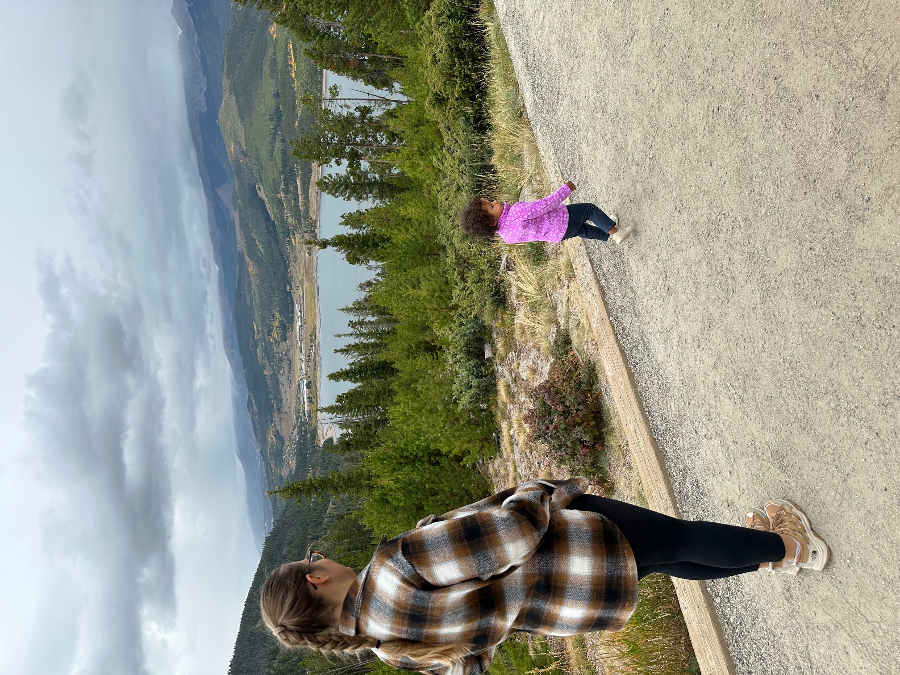

About Me
From IT audit and risk management to hands-on software engineering.
I am an IT Audit Manager and Computer Science student at the University of Colorado Boulder, transitioning into software engineering. I bring 8+ years of experience in systems analysis, risk assessment, and process improvement.
Education
- Bachelor of Science in Computer Science (in progress) — University of Colorado Boulder
- Master of Science in Management Information Systems — The University of Akron
- Master of Science in Accountancy — The University of Akron
Strengths & Focus
Audit mindset in code
I bring risk, control, and compliance thinking directly into how I design and review systems.
Systems & scalability
I care about how services behave under real workloads, not just whether they pass a happy-path test.
Security by default
Security, privacy, and data protection aren’t afterthoughts – they shape how I architect and automate.
Now & Next
What I'm learning now
- Advanced C++ and systems programming patterns
- Data structures and algorithms for large-scale systems
- Cloud security, DevSecOps, and infrastructure as code fundamentals
What I'm looking for next
- Internships or early-career software engineering roles
- Teams working on security, infrastructure, or backend systems
- Environments where I can blend audit, security, and engineering experience
Experience
- Broadcom — IT Audit Manager
- Big 4 (EY) Consulting — Senior Technology Risk Consultant
- Personal — Coding projects & research as a CS student
Certifications
- Certified Information Systems Security Professional (CISSP)
- Certified Information Systems Auditor (CISA)
- Certified Data Privacy Solutions Engineer (CDPSE)
- Certified Information Systems Manager (CISM)
- Certificate of Cloud Security Knowledge (CCSK)
- Oracle Cloud Infrastructure (OCI) Foundations Certified Associate
- ISO 27001 Lead Auditor - Information Security
How I Work
- Clarity first: I invest in clear problem definitions, requirements, and naming before shipping code.
- Measure then optimize: I rely on data and profiling to guide performance and reliability improvements.
- Security by default: I treat security, privacy, and compliance as core design constraints, not add-ons.
- Iterative delivery: I prefer small, reviewable changes that are easy to test, ship, and roll back.
Personal Interests
When I'm not deep into code or audits, I'm usually exploring new cuisines, traveling with my family,
or getting lost in documentaries. I enjoy staying active and always look for small ways
to improve how I think, learn, and build.
I believe growth comes from curiosity, and that mindset shapes how I work, learn, tackle challenges, and collaborate with others.


×